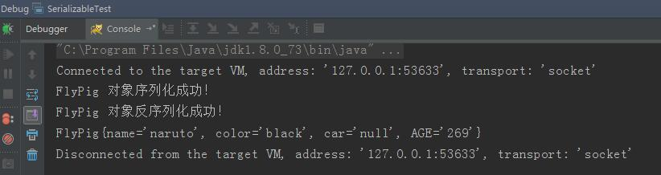
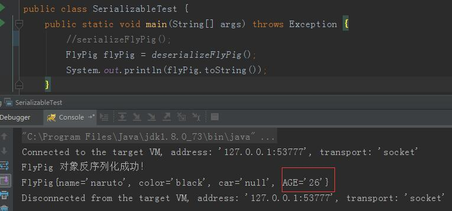
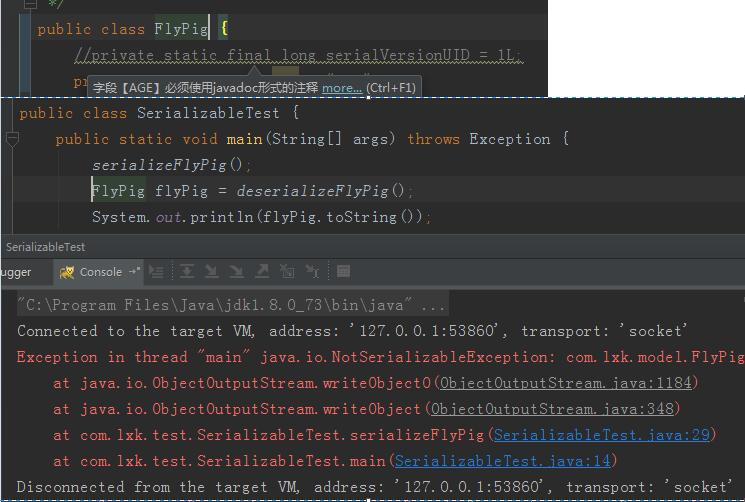
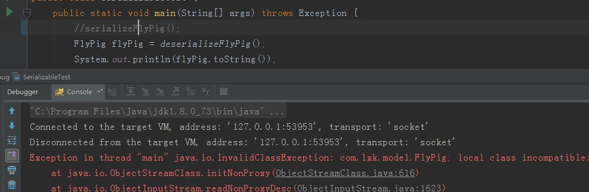
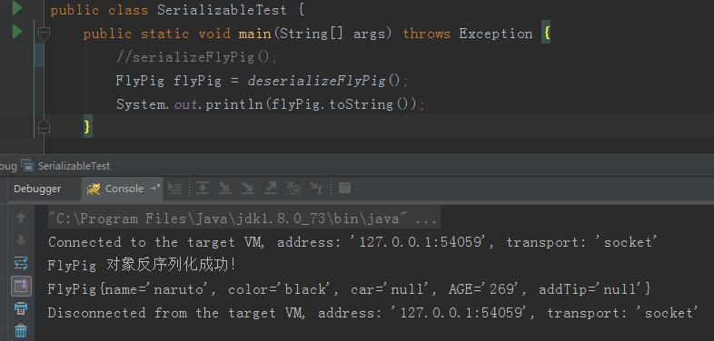

对象的序列化和反序列化¶
遇到这个 Java Serializable 序列化这个接口，我们可能会有如下的问题
- 什么叫序列化和反序列化
- 作用。为啥要实现这个 Serializable 接口，也就是为啥要序列化
- serialVersionUID 这个的值到底是在怎么设置的，有什么用。有的是1L，有的是一长串数字，迷惑ing。
我刚刚见到这个关键字 Serializable 的时候，就有如上的这么些问题。
在处理这个问题之前，你要先知道一个问题，这个比较重要。
这个Serializable接口，以及相关的东西，全部都在 Java io 里面的。
1. 序列化和反序列化的概念¶
序列化：把对象转换为字节序列的过程称为对象的序列化。
反序列化：把字节序列恢复为对象的过程称为对象的反序列化。
上面是专业的解释，现在来点通俗的解释。在代码运行的时候，我们可以看到很多的对象(debug过的都造吧)， 可以是一个，也可以是一类对象的集合，很多的对象数据，这些数据中， 有些信息我们想让他持久的保存起来，那么这个序列化。 就是把内存里面的这些对象给变成一连串的字节描述的过程。 常见的就是变成文件 我不序列化也可以保存文件啥的呀，有什么影响呢？我也是这么问的。
2. 什么情况下需要序列化¶
当你想把的内存中的对象状态保存到一个文件中或者数据库中时候；
当你想用套接字在网络上传送对象的时候；
当你想通过RMI传输对象的时候；
(老实说，上面的几种，我可能就用过个存数据库的)
3. 如何实现序列化¶
实现Serializable接口即可
上面这些理论都比较简单，下面实际代码看看这个序列化到底能干啥，以及会产生的bug问题。
先上对象代码，飞猪.java
package com.lxk.model;
import java.io.Serializable;
/**
* @author lxk on 2017/11/1
*/
public class FlyPig implements Serializable {
//private static final long serialVersionUID = 1L;
private static String AGE = "269";
private String name;
private String color;
transient private String car;
//private String addTip;
public String getName() {
return name;
}
public void setName(String name) {
this.name = name;
}
public String getColor() {
return color;
}
public void setColor(String color) {
this.color = color;
}
public String getCar() {
return car;
}
public void setCar(String car) {
this.car = car;
}
//public String getAddTip() {
// return addTip;
//}
//
//public void setAddTip(String addTip) {
// this.addTip = addTip;
//}
@Override
public String toString() {
return "FlyPig{" +
"name='" + name + '\'' +
", color='" + color + '\'' +
", car='" + car + '\'' +
", AGE='" + AGE + '\'' +
//", addTip='" + addTip + '\'' +
'}';
}
}
注意下，注释的代码，是一会儿要各种情况下使用的。
下面就是main方法啦
package com.lxk.test;
import com.lxk.model.FlyPig;
import java.io.*;
/**
* 序列化测试
*
* @author lxk on 2017/11/1
*/
public class SerializableTest {
public static void main(String[] args) throws Exception {
serializeFlyPig();
FlyPig flyPig = deserializeFlyPig();
System.out.println(flyPig.toString());
}
/**
* 序列化
*/
private static void serializeFlyPig() throws IOException {
FlyPig flyPig = new FlyPig();
flyPig.setColor("black");
flyPig.setName("naruto");
flyPig.setCar("0000");
// ObjectOutputStream 对象输出流，将 flyPig 对象存储到E盘的 flyPig.txt 文件中，完成对 flyPig 对象的序列化操作
ObjectOutputStream oos = new ObjectOutputStream(new FileOutputStream(new File("d:/flyPig.txt")));
oos.writeObject(flyPig);
System.out.println("FlyPig 对象序列化成功！");
oos.close();
}
/**
* 反序列化
*/
private static FlyPig deserializeFlyPig() throws Exception {
ObjectInputStream ois = new ObjectInputStream(new FileInputStream(new File("d:/flyPig.txt")));
FlyPig person = (FlyPig) ois.readObject();
System.out.println("FlyPig 对象反序列化成功！");
return person;
}
}
对上面的2个操作文件流的类的简单说明
ObjectOutputStream代表对象输出流：
它的writeObject(Object obj)方法可对参数指定的obj对象进行序列化，把得到的字节序列写到一个目标输出流中。
ObjectInputStream代表对象输入流：
它的readObject()方法从一个源输入流中读取字节序列，再把它们反序列化为一个对象，并将其返回。
具体怎么看运行情况。
第一种：上来就这些代码，不动，直接run，看效果。
实际运行结果，他会在 d:/flyPig.txt 生成个文件。
从运行结果上看：
1，他实现了对象的序列化和反序列化。
2，transient 修饰的属性，是不会被序列化的。我设置的奥迪四个圈的车不见啦，成了null。my god。
3，你先别着急说，这个静态变量AGE也被序列化啦。这个得另测。
第二种：为了验证这个静态的属性能不能被序列化和反序列化，可如下操作。
public static void main(String[] args) throws Exception {
serializeFlyPig();
//FlyPig flyPig = deserializeFlyPig();
//System.out.println(flyPig.toString());
}
这个完了之后，意思也就是说，你先序列化个对象到文件了。这个对象是带静态变量的static。
现在修改flyPig类里面的AGE的值，给改成26吧。
然后，看下图里面的运行代码和执行结果。
可以看到，刚刚序列化的269，没有读出来。而是刚刚修改的26，如果可以的话，应该是覆盖这个26，是269才对。
所以，得出结论，这个静态static的属性，他不序列化。
第三种：示范这个 serialVersionUID 的作用和用法
最暴力的改法，直接把model的类实现的这个接口去掉。然后执行后面的序列化和反序列化的方法。直接报错。
抛异常：NotSerializableException
这个太暴力啦，不推荐这么干。
然后就是，还和上面的操作差不多，先是单独执行序列化方法。生成文件。 然后，打开属性 addTip ，这之后，再次执行反序列化方法，看现象。
抛异常：InvalidClassException 详情如下。
InvalidClassException: com.lxk.model.FlyPig;
local class incompatible:
stream classdesc serialVersionUID = -3983502914954951240,
local class serialVersionUID = 7565838717623951575
解释一下：
因为我再model里面是没有明确的给这个 serialVersionUID 赋值，但是，Java会自动的给我赋值的，
这个值跟这个model的属性相关计算出来的。
我保存的时候，也就是我序列化的时候，那时候还没有这个addTip属性呢，
所以，自动生成的serialVersionUID 这个值，
在我反序列化的时候Java自动生成的这个serialVersionUID值是不同的，他就抛异常啦。
（你还可以反过来，带ID去序列化，然后，没ID去反序列化。也是同样的问题。）
再来一次，就是先序列化，这个时候，把 private static final long serialVersionUID = 1L; 这行代码的注释打开。那个addTip属性先注释掉
序列化之后，再把这个属性打开，再反序列化。看看什么情况。
这个时候，代码执行OK，一切正常。good。
这个现象对我们有什么意义：
老铁，这个意义比较大，首先，你要是不知道这个序列化是干啥的，万一他真的如开头所讲的那样存数据库啦，socket传输啦，rmi传输啦。虽然我也不知道这是干啥的。你就给model bean 实现了个这个接口，你没写这个 serialVersionUID 那么在后来扩展的时候，可能就会出现不认识旧数据的bug，那不就炸啦吗。回忆一下上面的这个出错情况。想想都可怕，这个锅谁来背？
所以，有这么个理论，就是在实现这个Serializable 接口的时候，一定要给这个 serialVersionUID 赋值，就是这么个问题。
这也就解释了，我们刚刚开始编码的时候，实现了这个接口之后，为啥eclipse编辑器要黄色警告，需要添加个这个ID的值。而且还是一长串你都不知道怎么来的数字。
下面解释这个 serialVersionUID 的值到底怎么设置才OK。
首先，你可以不用自己去赋值，Java会给你赋值，但是，这个就会出现上面的bug，很不安全，所以，还得自己手动的来。
那么，我该怎么赋值，eclipse可能会自动给你赋值个一长串数字。这个是没必要的。
可以简单的赋值个 1L，这就可以啦。。这样可以确保代码一致时反序列化成功。
不同的serialVersionUID的值，会影响到反序列化，也就是数据的读取，你写1L，注意L大些。计算机是不区分大小写的，但是，作为观众的我们，是要区分1和L的l，所以说，这个值，闲的没事不要乱动，不然一个版本升级，旧数据就不兼容了，你还不知道问题在哪。。。